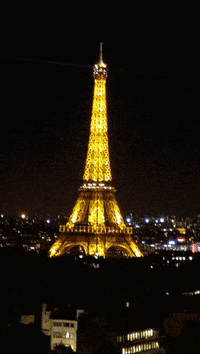

Yellow Stone Park

Photo Gallery
Yellowstone National Park, located primarily in the state of Wyoming, is one of the most iconic and diverse natural landscapes in the United States. Spanning over 2 million acres, it is renowned for its geothermal features, including the famous Old Faithful geyser, as well as its vast wilderness, alpine rivers, and abundant wildlife. Yellowstone is home to an array of species, from grizzly bears and wolves to bison and elk. Its dramatic canyons, pristine lakes, and expansive forests offer endless opportunities for outdoor recreation and exploration. Established as the world's first national park in 1872, Yellowstone continues to inspire and awe visitors with its breathtaking beauty and unparalleled natural wonders.
Paris, France
 Paris, the capital city of France, is a timeless beacon of art, culture, and romance. Renowned for its iconic landmarks such as the Eiffel Tower,
Louvre Museum, and Notre-Dame Cathedral, Paris captivates visitors with its rich history and architectural splendor. The city's charming neighborhoods,
like Montmartre and Le Marais, offer a delightful blend of cobblestone streets, quaint cafes, and vibrant street art. Paris is celebrated not only for
its world-class museums and galleries but also for its culinary prowess, as it stands as a global epicenter of gastronomy. With its elegant boulevards,
the Seine River flowing through its heart, and an ambiance that effortlessly marries tradition with modernity, Paris continues to enchant travelers from
around the globe.
Niagra Falls

Geographical Location: North America Niagara Falls is located on the border between Canada and the United States. Connecting Lake Erie and Lake Ontario,
Niagara Falls has the highest flow rate of any waterfall in North America. Niagara Falls draws in thousands of visitors every year, and for good reason.
As such, there are numerous things that you can see while you visit the falls, and it is very easy to make a full
trip out of seeing this wonderful sight.
Chicago, Illinois

Chicago, the bustling metropolis perched on the shores of Lake Michigan, is a dynamic city celebrated for its architectural marvels, diverse culture, and vibrant arts scene.
The iconic skyline, adorned with landmarks like the Willis Tower and John Hancock Center, reflects the city's impressive urban landscape. Renowned for its deep-rooted blues and jazz
heritage, world-class museums such as the Art Institute of Chicago, and a culinary scene that spans from deep-dish pizza to Michelin-starred restaurants, Chicago offers a rich tapestry of
experiences for both residents and visitors alike.